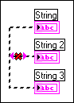

There is no data input for this wire. For example, the wire might be connected only to indicators and not to any controls.
To correct this error, right-click one of the items the wire is connected to and select Change to Control from the shortcut menu. All other items remain as indicators because only one data input is needed.